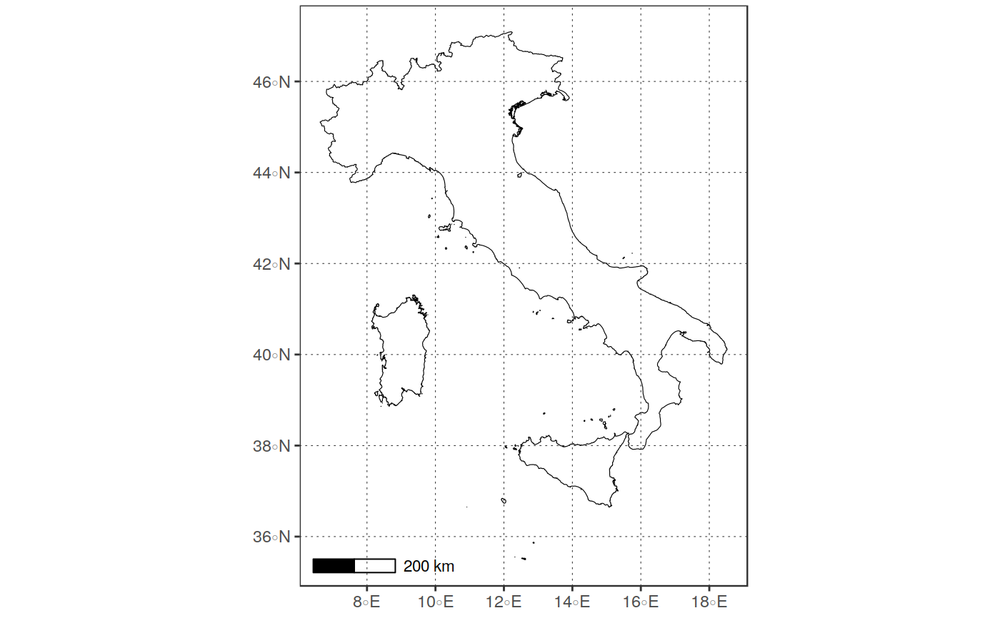
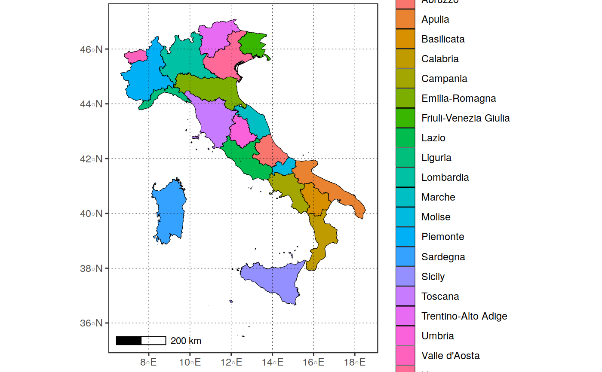

Function to download administrative boundaries data from the gadm
archive, starting from a country name or ISO code, and the level of desired
administrative units. The function is a simple wrapper to the
raster::getData function, with a-priori checks on country name or ISO code
and automatic recasting to sf format.
get_boundaries(iso, level = 1, path = tempdir())
| iso |
|
|---|---|
| level |
|
| path |
|
sf object containing the desired data
#>plot_vect(ita_boundaries)#> Warning: `fill_var` not specified. Only the geometry will be plotted!#>#>ita_region_boundaries <- get_boundaries("ITA", 1)#>#>#>#>lomb_boundaries <- ita_region_boundaries %>% dplyr::filter(NAME_1 == "Lombardia") plot_vect(lomb_boundaries)#> Warning: `fill_var` not specified. Only the geometry will be plotted!#>